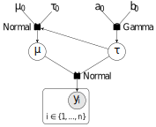
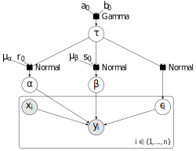
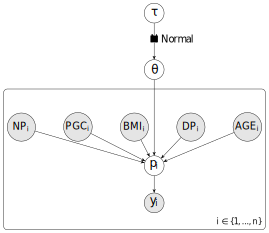

Benchmark Examples
To demonstrate the efficacy of Harmonic we have included a variety of common evidence estimation examples, where the posterior function is particularly pathological. These examples are somewhat standard benchmarks, and in many cases have historically highlight the failings of the vanilla harmonic mean estimator. Complexity increases from left to right, culminating in the logistic regression and non-nested linear regressions of the Pima Indian and Radiata Pine benchmarks respectively. See Friel and Wyse (2011) for an extensive review of various estimators applied to these benchmarks.
A standard 2D Gaussian is a simple example often used for basic benchmarking and code validation. The 2D Gaussian posterior configuration here is composed of a likelihood defined as
and a prior defined as
where \(w\) is a radial weighting function defined such that \(w=1\) inside a circle of radius \(R\) and 0 outside. A useful property of this particular posterior is that it permits a closed for analytic expression for the evidence, given as
where we define the factor \(\beta = 1-e^{-\frac{w^2}{2\sigma^2}}\). Further one can compute analytic expressions for the variance and variance of the variance of the harmonic mean estimator for this particular case (see paper for details). This therefore allows one to easily compare evidence and evidence variance estimates to the true evidence and evidence variance – as is done here.
The analytic evidence is given by
def ln_analytic_evidence(ndim, cov):
ln_norm_lik = 0.5*ndim*np.log(2*np.pi) + 0.5*np.log(np.linalg.det(cov))
return ln_norm_lik
where the covariance is initialised by the function
def init_cov(ndim):
cov = np.zeros((ndim,ndim))
diag_cov = np.ones(ndim) + np.random.randn(ndim)*0.1
np.fill_diagonal(cov, diag_cov)
for i in range(ndim-1):
cov[i,i+1] = (-1)**i * 0.5*np.sqrt(cov[i,i]*cov[i+1,i+1])
cov[i+1,i] = cov[i,i+1]
return cov
The log-prior is given by the most straightforward flat uniform prior with infinite extent. We may then combine the log-likelihood and log-prior functions to define the log-posterior function simply by
def ln_posterior(x, inv_cov):
return -np.dot(x,np.dot(inv_cov,x))/2.0
The first step of our evidence computation requires recovering a relatively small number of samples from the given posterior. This can be done in whatever way the user wishes, the only requirement being that a set of chains each with associated samples is provided for subsequent steps. In our examples we choose to use the excellent emcee python package. Utilizing emcee this example recovers samples via
pos = np.random.rand(ndim * nchains).reshape((nchains, ndim))
sampler = emcee.EnsembleSampler(nchains, ndim, ln_posterior, args=[inv_cov])
rstate = np.random.get_state()
(pos, prob, state) = sampler.run_mcmc(pos, samples_per_chain, rstate0=rstate)
samples = np.ascontiguousarray(sampler.chain[:,nburn:,:])
lnprob = np.ascontiguousarray(sampler.lnprobability[:,nburn:])
where the initial positions are drawn randomly from a uniform area of size representative of the region over which the posterior has large support.
As this is a Gaussian posterior the Hyper-spherical model is an obvious choice. Hence, no cross-validation is necessary and the model can be trained immediately. Having now sucessfully trained the network, we can make a prediction (fit) of the optimal (learnt) container function \(\psi\) – i.e. the optimal hyper-parameter configuration and optimal model class – by
model = hm.model.HyperSphere(ndim, domains)
fit_success, objective = model.fit(chains_train.samples, chains_train.ln_posterior)
This container function is then used with the harmonic mean estimator to construct a robust computation of the Bayesian evidence by
ev = hm.Evidence(chains_test.nchains, model)
ev.add_chains(chains_test)
ln_evidence, ln_evidence_std = ev.compute_ln_evidence()
The Rosenbrock function is a pathological function often used for benchmarking of algorithms. The functional form is given by
where \(d\) is the dimension of the function and the input domain is usually taken to be \(x_i \in [-5.0, 10.0] \: \; \forall i = 1, \dots, d\). The Rosenbrock function is difficult in the sense that convergence to the unimodal minimum is difficult.
Note
by definition the global minimum is trivially given by \(\mathcal{L}(x^{\text{min}}) = 0, \: \text{at} \: x^{\text{min}} = (1,\dots,1)\).
The log-likelihood function is given by
def ln_likelihood(x, a=1.0, b=100.0):
f = 0.0
for i_dim in range(x.size-1):
f += b*(x[i_dim+1]-x[i_dim]**2)**2 + (a-x[i_dim])**2
return -f
where the Rosenbrock function \(\mathcal{L}(x)\) is inverted to \(-\mathcal{L}(x)\) so as to form a sensible likelihood function – i.e. a function which converges to a global maximum rather than a global minimum. In the example at hand we assume a simple uniform log-prior defined such that,
def ln_prior_uniform(x, xmin=-10.0, xmax=10.0, ymin=-5.0, ymax=15.0):
if x[0] >= xmin and x[0] <= xmax and x[1] >= ymin and x[1] <= ymax:
return 1.0 / ( (xmax - xmin) * (ymax - ymin) )
else:
return 0.0
where the log-prior is uniform over \(x_1 \in [-10.0, 10.0] \: \text{and} \: x_2 \in [-5.0, 15.0]\).
Warning
One should note that for \(d \gg 1\) uniform priors quickly become very informative, and as such often constitute poor choices – or should at the very least be chosen carefully.
Additionally we provide an alternate log-prior in the form of a simple Gaussian prior defined such that
def ln_prior_gaussian(x, mu=1.0, sigma=5.):
return - 0.5 * np.dot(x-mu, x-mu) / sigma**2 - 0.5 * x.size * np.log(2 * np.pi * sigma)
Finally, combining the log-likelihood and log-prior functions we can define the log-posterior function simply by
def ln_posterior(x, ln_prior, a=1.0, b=100.0):
ln_L = ln_likelihood(x, a=a, b=b)
if not np.isfinite(ln_L):
return -np.inf
else:
return ln_prior(x) + ln_L
The first step of our evidence computation requires recovering a relatively small number of samples from the given posterior. This can be done in whatever way the user wishes, the only requirement being that a set of chains each with associated samples is provided for subsequent steps. In our examples we choose to use the excellent emcee python package. Utilizing emcee this example recovers samples via
pos = np.random.rand(ndim * nchains).reshape((nchains, ndim)) * 0.1
sampler = emcee.EnsembleSampler(nchains, ndim, ln_posterior, args=[ln_prior, a, b])
rstate = np.random.get_state()
sampler.run_mcmc(pos, samples_per_chain, rstate0=rstate)
samples = np.ascontiguousarray(sampler.chain[:,nburn:,:])
lnprob = np.ascontiguousarray(sampler.lnprobability[:,nburn:])
where the initial positions are drawn randomly from a uniform area of size representative of the region over which the posterior has large support.
The cross-validation step allows Harmonic to compute the optimal hyper-parameter configuration for a certain class of model for a given set of posterior samples.
There are two main stages to this cross-validation process. First the MCMC chains (in this case from emcee) are configured
chains = hm.Chains(ndim)
chains.add_chains_3d(samples, lnprob)
chains_train, chains_test = hm.utils.split_data(chains, training_proportion=0.5)
before being used as training data to train a network to predict optimal configurations of the hyper-parameters associated with the model class. This is done by
validation_variances =
hm.utils.cross_validation(chains_train,
domain,
hyper_parameters,
nfold=nfold,
modelClass=hm.model.KernelDensityEstimate,
seed=0)
best_hyper_param_ind = np.argmin(validation_variances)
best_hyper_param = hyper_parameters[best_hyper_param_ind]
In this case we choose to used the Kernel Density Estimate (KDE) though others could be selected at this stage with ease.
Finally the now sucessfully trained network is used to make a prediction (fit) the optimal (learnt) container function \(\psi\) – i.e. the optimal hyper-parameter configuration – by
model = hm.model.KernelDensityEstimate(ndim, domain, hyper_parameters=best_hyper_param)
fit_success = model.fit(chains_train.samples, chains_train.ln_posterior)
This container function is then used with the harmonic mean estimator to construct a robust computation of the Bayesian evidence by
ev = hm.Evidence(chains_test.nchains, model)
ev.add_chains(chains_test)
ln_evidence, ln_evidence_std = ev.compute_ln_evidence()
The Rastrigin function is a particularly tricky function often used for benchmarking of algorithms. The functional form is given by
where \(d\) is the dimension of the function and the input domain is taken in this case to be \(x_i \in [-6.0, 6.0] \: \; \forall i = 1, \dots, d\). The Rastrigin function is particularly pathological as it is highly multimodal however the maxima locations are regularly distributed which simplifies the problem somewhat.
Note
by definition the global minimum is trivially given by \(\mathcal{L}(x^{\text{min}}) = 0, \: \text{at} \: x^{\text{min}} = (0,\dots,0)\).
The log-likelihood function is given by
def ln_likelihood(x):
f = 10.0 * x.size
for i_dim in range(x.size):
f += x[i_dim]**2 - 10.0 * np.cos( 2.0 * np.pi * x[i_dim] )
return -f
where the Rastrigin function \(\mathcal{L}(x)\) is inverted to \(-\mathcal{L}(x)\) so as to form a sensible likelihood function – i.e. a function which converges to a global maximum rather than a global minimum. In the example at hand we assume a simple uniform log-prior defined such that,
def ln_prior_uniform(x, xmin=-6.0, xmax=6.0, ymin=-6.0, ymax=6.0):
if x[0] >= xmin and x[0] <= xmax and x[1] >= ymin and x[1] <= ymax:
return 1.0 / ( (xmax - xmin) * (ymax - ymin) )
else:
return 0.0
where the prior is uniform over \(x_i \in [-6.0, 6.0] \: \; \forall i = 1, \dots, d\). In practice however this prior need not necessarily be uniform.
Warning
One should note that for \(d \gg 1\) uniform priors quickly become very informative, and as such often constitute poor choices.
Finally, combining the log-likelihood and log-prior functions we can define the log-posterior function simply by
def ln_posterior(x, ln_prior):
ln_L = ln_likelihood(x)
if not np.isfinite(ln_L):
return -np.inf
else:
return ln_prior(x) + ln_L
The first step of our evidence computation requires recovering a relatively small number of samples from the given posterior. This can be done in whatever way the user wishes, the only requirement being that a set of chains each with associated samples is provided for subsequent steps. In our examples we choose to use the excellent emcee python package. Utilizing emcee this example recovers samples via
pos = np.random.rand(ndim * nchains).reshape((nchains, ndim)) * 0.5
sampler = emcee.EnsembleSampler(nchains, ndim, ln_posteriargs=[ln_prior])
rstate = np.random.get_state()
sampler.run_mcmc(pos, samples_per_chain, rstate0=rstate)
samples = np.ascontiguousarray(sampler.chain[:,nburn:,:])
lnprob = np.ascontiguousarray(sampler.lnprobability[:,nburn:])
where the initial positions are drawn randomly from a uniform area of size representative of the region over which the posterior has large support.
The cross-validation step allows Harmonic to compute the optimal hyper-parameter configuration for a certain class of model for a given set of posterior samples.
There are two main stages to this cross-validation process. First the MCMC chains (in this case from emcee) are configured
chains = hm.Chains(ndim)
chains.add_chains_3d(samples, lnprob)
chains_train, chains_test = hm.utils.split_data(chains, training_proportion=0.5)
before being used as training data to train a network to predict optimal configurations of the hyper-parameters associated with the model class. This is done by
validation_variances =
hm.utils.cross_validation(chains_train,
domain,
hyper_parameters,
nfold=nfold,
modelClass=hm.model.KernelDensityEstimate,
seed=0)
best_hyper_param_ind = np.argmin(validation_variances)
best_hyper_param = hyper_parameters[best_hyper_param_ind]
In this case we choose to used the Kernel Density Estimate (KDE) though others could be selected at this stage with ease.
Finally the now sucessfully trained network is used to make a prediction (fit) the optimal (learnt) container function \(\psi\) – i.e. the optimal hyper-parameter configuration – by
model = hm.model.KernelDensityEstimate(ndim, domain, hyper_parameters=best_hyper_param)
fit_success = model.fit(chains_train.samples, chains_train.ln_posterior)
This container function is then used with the harmonic mean estimator to construct a robust computation of the Bayesian evidence by
ev = hm.Evidence(chains_test.nchains, model)
ev.add_chains(chains_test)
ln_evidence, ln_evidence_std = ev.compute_ln_evidence()
The Normal-Gamma distirbution is an interesting example as it is one for which the original harmonic mean estimator catastrophically failed. Further it is claimed that the harmonic mean evidence estimator is insensitive to the prior and should be avoided – a question addressed within this example. The Normal-Gamma posterior configuration is composed of a likelihood defined as
and a prior defined as
where \(\alpha_0, \beta_0, \tau_0\) and \(\mu_0\) are parameters that define the prior and \(n\) is the number of data points \(x_i\) we have. A useful property of this particular posterior is that it permits a closed for analytic expression for the evidence, given as
where for data mean \(\bar{x}\) we have defined,
This therefore allows one to easily compare evidence estimates to the true evidence – as is done here. A DAG for this problem is presented below.
{kind=link}
The log-likelihood function is given by
def ln_likelihood(x_mean, x_std, x_n, mu, tau):
return -0.5 * x_n * tau * (x_std**2 + (x_mean-mu)**2) - 0.5 * x_n * np.log(2 * np.pi) + 0.5 * x_n * np.log(tau)
The log-prior is given by
def ln_prior(mu, tau, prior_params):
if tau < 0:
return -np.inf
mu_0, tau_0, alpha_0, beta_0 = prior_params
ln_pr = alpha_0 * np.log(beta_0) + 0.5 * np.log(tau_0)
ln_pr += - sp.gammaln(alpha_0) - 0.5 * np.log(2*np.pi)
ln_pr += (alpha_0 - 0.5) * np.log(tau)
ln_pr += -beta_0 * tau
ln_pr += -0.5 * tau_0 * tau * (mu - mu_0)**2
return ln_pr
where the term prior_params is a tuple which stores the parameters \(\alpha_0, \beta_0, \tau_0\) and \(\mu_0\).
We may then combine the log-likelihood and log-prior functions to define the log-posterior function simply by
def ln_posterior(theta, x_mean, x_std, x_n, prior_params):
mu, tau = theta
ln_pr = ln_prior(mu, tau, prior_params)
if not np.isfinite(ln_pr):
return -np.inf
ln_L = ln_likelihood(x_mean, x_std, x_n, mu, tau)
return ln_L + ln_pr
Further as discussed we can explicitly calculate the analytic evidence by defining a function such as
def ln_analytic_evidence(x_mean, x_std, x_n, prior_params):
mu_0, tau_0, alpha_0, beta_0 = prior_params
tau_n = tau_0 + x_n
alpha_n = alpha_0 + x_n/2
beta_n = beta_0 + 0.5 * x_n * x_std**2 + tau_0 * x_n * (x_mean - mu_0)**2 / (2 * (tau_0 + x_n))
ln_z = sp.gammaln(alpha_n) - sp.gammaln(alpha_0)
ln_z += alpha_0 * np.log(beta_0) - alpha_n * np.log(beta_n)
ln_z += 0.5 * np.log(tau_0) - 0.5 * np.log(tau_n)
ln_z -= 0.5 * x_n * np.log(2*np.pi)
return ln_z
The first step of our evidence computation requires recovering a relatively small number of samples from the given posterior. This can be done in whatever way the user wishes, the only requirement being that a set of chains each with associated samples is provided for subsequent steps. In our examples we choose to use the excellent emcee python package. Utilizing emcee this example recovers samples via
pos = [np.array([x_mean, 1.0/x_std**2]) + x_std * np.random.randn(ndim) /np.sqrt(x_n) for i in range(nchains)]
sampler = emcee.EnsembleSampler(nchains, ndim, ln_posterior, args=(x_mean, x_std, x_n, prior_params))
rstate = np.random.get_state()
sampler.run_mcmc(pos, samples_per_chain, rstate0=rstate)
samples = np.ascontiguousarray(sampler.chain[:,nburn:,:])
lnprob = np.ascontiguousarray(sampler.lnprobability[:,nburn:])
where the initial positions are drawn randomly from a uniform area of size representative of the region over which the posterior has large support.
The cross-validation step allows Harmonic to compute the optimal hyper-parameter configuration for a certain class of model for a given set of posterior samples.
There are two main stages to this cross-validation process. First the MCMC chains (in this case from emcee) are configured
chains = hm.Chains(ndim)
chains.add_chains_3d(samples, lnprob)
chains_train, chains_test = hm.utils.split_data(chains, training_proportion=0.25)
before being used as training data to train a network to predict the optimal model class and optimal configuration of the hyper-parameters associated with the model class. This is done by
#! Make predictions for MGMM model class
#! -------------------------------------
validation_variances_MGMM =
hm.utils.cross_validation(chains_train,
domains_MGMM,
hyper_parameters_MGMM,
nfold=nfold,
modelClass=hm.model.ModifiedGaussianMixtureModel,
seed=0)
best_hyper_param_MGMM_ind = np.argmin(validation_variances_MGMM)
best_hyper_param_MGMM = hyper_parameters_MGMM[best_hyper_param_MGMM_ind]
#! Make predictions for Hyper-sphere model class
#! ---------------------------------------------
validation_variances_sphere =
hm.utils.cross_validation(chains_train,
domains_sphere,
hyper_parameters_sphere, nfold=nfold,
modelClass=hm.model.HyperSphere,
seed=0)
best_hyper_param_sphere_ind = np.argmin(validation_variances_sphere)
best_hyper_param_sphere = hyper_parameters_sphere[best_hyper_param_sphere_ind]
In this case we perform cross-validation for both the MGMM and hyper-sphere model classes, from which one can select the optimal model class and the optimal set of hyper-parameters associated with that class.
Finally the now sucessfully trained network is used to make a prediction (fit) the optimal (learnt) container function \(\psi\) – i.e. the optimal hyper-parameter configuration and optimal model class – by
best_var_MGMM = validation_variances_MGMM[best_hyper_param_MGMM_ind]
best_var_sphere = validation_variances_sphere[best_hyper_param_sphere_ind]
#! Select the optimal (minimum variance) model class
#! -------------------------------------------------
if best_var_MGMM < best_var_sphere:
model = hm.model.ModifiedGaussianMixtureModel(ndim, domains_MGMM, hyper_parameters=best_hyper_param_MGMM)
model.verbose=False
else:
model = hm.model.HyperSphere(ndim, domains_sphere, hyper_parameters=best_hyper_param_sphere)
fit_success = model.fit(chains_train.samples, chains_train.ln_posterior)
This container function is then used with the harmonic mean estimator to construct a robust computation of the Bayesian evidence by
ev = hm.Evidence(chains_test.nchains, model)
ev.add_chains(chains_test)
ln_evidence, ln_evidence_std = ev.compute_ln_evidence()
We consider another example where the original harmonic mean estimator was shown to fail catastrophically. In particular, we consider non-nested linear regression models for the Radiata pine data, which is another common benchmark data-set, and show that our learnt harmonic mean estimator is highly accurate.
For \(n=42\) trees, the Radiata pine data-set includes measurements of the maximum compression strength parallel to the grain \(y_i\), density \(x_i\) and resin-adjusted density \(z_i\), for specimen \(i \in \{1, \ldots, n\}\). The question at hand is whether density or resin-adjusted density is a better predictor of compression strength. This motivates two Gaussian linear regression models:
where \(\bar{x} = \frac{1}{n} \sum_{i=1}^n x_i\), \(\bar{z} = \frac{1}{n} \sum_{i=1}^n z_i\), and \(\tau\) and \(\lambda\) denote the precision (inverse variance) of the noise for the respective models.
For Model 1, Gaussian priors are assumed for the bias and linear terms:
with means \(\mu_\alpha = 3000\) and \(\mu_\beta = 185\), and precision scales \(r_0 = 0.06\) and \(s_0 = 6\). A gamma prior \(\tau \sim \text{Ga}(a_0, b_0)\) is assumed for the noise precision with shape \(a_0 = 3\) and rate \(b_0 = 2 \times 300^2\). The joint prior for \((\alpha, \beta, \tau)\) then reads:
The likelihood for Model 1 is given by
where \(x = (x_1, \dots, x_n)^\text{T}\) and \(y = (y_1, \dots, y_n)^\text{T}\). For Model 2, the priors adopted for \((\gamma, \delta, \lambda)\) are the same as those adopted for \((\alpha, \beta, \tau)\) of Model 1, respectively, with the same hyper-parameters. The likelihood for Model 2 again takes an identical form to Model 1, and is presented in the DAG below.
{kind=link}
The log-likelihood function is given by
def ln_likelihood(y, x, n, alpha, beta, tau):
ln_like = 0.5 * n * np.log(tau)
ln_like -= 0.5 * n * np.log(2.0 * np.pi)
s = np.sum((y - alpha - beta * x)**2)
ln_like -= 0.5 * tau * s
return ln_like
The combined log-prior is given by
def ln_prior(alpha, beta, tau, mu_0, r_0, s_0, a_0, b_0):
if tau < 0:
return -np.inf
ln_pr = a_0 * np.log(b_0)
ln_pr += a_0 * np.log(tau)
ln_pr -= b_0 * tau
ln_pr -= np.log(2.0 * np.pi)
ln_pr -= sp.gammaln(a_0)
ln_pr += 0.5 * np.log(r_0)
ln_pr += 0.5 * np.log(s_0)
ln_pr -= 0.5 * tau * (r_0 * (alpha - mu_0[0,0])**2 + s_0 * (beta - mu_0[1,0])**2)
return ln_pr
We may then combine the log-likelihood and log-prior functions to define the log-posterior function simply by
def ln_posterior(theta, y, x, n, mu_0, r_0, s_0, a_0, b_0):
alpha, beta, tau = theta
ln_pr = ln_prior(alpha, beta, tau, mu_0, r_0, s_0, a_0, b_0)
if not np.isfinite(ln_pr):
return -np.inf
ln_L = ln_likelihood(y, x, n, alpha, beta, tau)
return ln_L + ln_pr
Further as discussed we can explicitly calculate the analytic evidence by defining a function such as
def ln_evidence_analytic(x, y, n, mu_0, r_0, s_0, a_0, b_0):
Q_0 = np.diag([r_0, s_0])
X = np.c_[np.ones((n, 1)), x]
M = X.T.dot(X) + Q_0
nu_0 = np.linalg.inv(M).dot(X.T.dot(y) + Q_0.dot(mu_0))
quad_terms = y.T.dot(y) + mu_0.T.dot(Q_0).dot(mu_0) - nu_0.T.dot(M).dot(nu_0)
ln_evidence = -0.5 * n * np.log(np.pi)
ln_evidence += a_0 * np.log(2.0*b_0)
ln_evidence += sp.gammaln(0.5*n + a_0) - sp.gammaln(a_0)
ln_evidence += 0.5 * np.log(np.linalg.det(Q_0)) - 0.5 * np.log(np.linalg.det(M))
ln_evidence += -(0.5 * n + a_0) * np.log(quad_terms + 2.0 * b_0)
return ln_evidence
The first step of our evidence computation requires recovering a relatively small number of samples from the given posterior. This can be done in whatever way the user wishes, the only requirement being that a set of chains each with associated samples is provided for subsequent steps. In our examples we choose to use the excellent emcee python package. Utilizing emcee this example recovers samples via
pos_alpha = mu_0[0,0] + 1.0 / np.sqrt(tau_prior_mean * r_0) * np.random.randn(nchains)
pos_beta = mu_0[1,0] + 1.0 / np.sqrt(tau_prior_mean * s_0) * np.random.randn(nchains)
pos_tau = tau_prior_mean + tau_prior_std * (np.random.rand(nchains) - 0.5)
pos = np.c_[pos_alpha, pos_beta, pos_tau]
if model_1:
args = (y, x, n, mu_0, r_0, s_0, a_0, b_0)
else:
args = (y, z, n, mu_0, r_0, s_0, a_0, b_0)
sampler = emcee.EnsembleSampler(nchains, ndim, ln_posterior, args=args)
rstate = np.random.get_state()
sampler.run_mcmc(pos, samples_per_chain, rstate0=rstate)
samples = np.ascontiguousarray(sampler.chain[:,nburn:,:])
lnprob = np.ascontiguousarray(sampler.lnprobability[:,nburn:])
where the initial positions are drawn randomly from the support of each covariate prior.
We adopt the hyper-spherical model, and fit the model hyper-parameters through cross-validation as in other examples. This learnt model is then used with the harmonic mean estimator to construct a robust computation of the Bayesian evidence by
ev = hm.Evidence(chains_test.nchains, model)
ev.add_chains(chains_test)
ln_evidence, ln_evidence_std = ev.compute_ln_evidence()
We consider the comparison of two logistic regression models using the Pima Indians data, which is another common benchmark problem for comparing estimators of the marginal likelihood. The original harmonic mean estimator has been shown to fail catastrophically for this example, whereas we show here that our learnt harmonic mean estimator is highly accurate.
The Pima Indians data, originally from the National Institute of Diabetes and Digestive and Kidney Diseases, were compiled from a study of indicators of diabetes in \(n=532\) Pima Indian women aged 21 or over. Seven primary predictors of diabetes were recorded, including: number of prior pregnancies (NP); plasma glucose concentration (PGC); diastolic blood pressure (BP); triceps skin fold thickness (TST); body mass index (BMI); diabetes pedigree function (DP); and age (AGE).
The probability of diabetes \(p_i\) for person \(i \in \{1, \ldots, n\}\) can be modelled by the standard logistic function
with covariates \(x_i = (1,x_{i,1}, \dots x_{i,d})^\text{T}\) and parameters \(\theta = (\theta_0, \dots, \theta_d)^\text{T}\), where \(d\) is the total number of covariates considered. The likelihood function then reads
where \(y = (y_1, \dots, y_n)^\text{T}\) is the diabetes incidence, (i.e. \(y_i\) is unity if patient \(i\) had diabetes and zero otherwise). An independent multivariate Gaussian prior is assumed for the parameters \(\theta\), given by
with precision \(\tau\). Two different logistic regression models are considered, with different subsets of covariates:
A graphical representation of Model 2 is illustrated below (Model 1 is similar but does not include the AGE covariate).
{kind=link}
The log-likelihood function is given by
def ln_likelihood(y, theta, x):
ln_p = compute_ln_p(theta, x)
ln_pp = np.log(1. - np.exp(ln_p))
return y.T.dot(ln_p) + (1-y).T.dot(ln_pp)
The log-prior is given by a multivariate Gaussian, e.g.
def ln_prior(tau, theta):
return 0.5 * len(theta) * np.log(tau/(2.*np.pi)) - 0.5 * tau * theta.T.dot(theta)
We may then combine the log-likelihood and log-prior functions to define the log-posterior function simply by
def ln_posterior(theta, tau, x, y):
ln_pr = ln_prior(tau, theta)
ln_L = ln_likelihood(y, theta, x)
return ln_pr + ln_L
The first step of our evidence computation requires recovering a relatively small number of samples from the given posterior. This can be done in whatever way the user wishes, the only requirement being that a set of chains each with associated samples is provided for subsequent steps. In our examples we choose to use the excellent emcee python package. Utilizing emcee this example recovers samples via
if model_1:
pos_0 = np.random.randn(nchains)*0.01
pos_1 = np.random.randn(nchains)*0.01
pos_2 = np.random.randn(nchains)*0.01
pos_3 = np.random.randn(nchains)*0.01
pos_4 = np.random.randn(nchains)*0.01
pos = np.c_[pos_0, pos_1, pos_2, pos_3, pos_4]
else:
pos_0 = np.random.randn(nchains)*0.01
pos_1 = np.random.randn(nchains)*0.01
pos_2 = np.random.randn(nchains)*0.01
pos_3 = np.random.randn(nchains)*0.01
pos_4 = np.random.randn(nchains)*0.01
pos_5 = np.random.randn(nchains)*0.01
pos = np.c_[pos_0, pos_1, pos_2, pos_3, pos_4, pos_5]
sampler = emcee.EnsembleSampler(nchains, ndim, ln_posterior, args=(tau, x, y))
rstate = np.random.get_state()
sampler.run_mcmc(pos, samples_per_chain, rstate0=rstate)
samples = np.ascontiguousarray(sampler.chain[:,nburn:,:])
lnprob = np.ascontiguousarray(sampler.lnprobability[:,nburn:])
where the initial positions are drawn randomly from the support of each covariate prior.
The cross-validation step allows Harmonic to compute the optimal hyper-parameter configuration for a certain class of model for a given set of posterior samples. There are two main stages to this cross-validation process. First the MCMC chains (in this case from emcee) are configured
chains = hm.Chains(ndim)
chains.add_chains_3d(samples, lnprob)
chains_train, chains_test = hm.utils.split_data(chains, training_proportion=0.5)
before being used as training data to train a network to predict optimal configurations of the hyper-parameters associated with the model class. This is done by
# MGMM model
validation_variances_MGMM =
hm.utils.cross_validation(chains_train,
domains_MGMM,
hyper_parameters_MGMM,
nfold=nfold,
modelClass=hm.model.ModifiedGaussianMixtureModel,
seed=0)
best_hyper_param_MGMM_ind = np.argmin(validation_variances_MGMM)
best_hyper_param_MGMM = hyper_parameters_MGMM[best_hyper_param_MGMM_ind]
# Hyper-spherical model
validation_variances_sphere =
hm.utils.cross_validation(chains_train,
domains_sphere,
hyper_parameters_sphere, nfold=nfold,
modelClass=hm.model.HyperSphere,
seed=0)
best_hyper_param_sphere_ind = np.argmin(validation_variances_sphere)
best_hyper_param_sphere = hyper_parameters_sphere[best_hyper_param_sphere_ind]
In this case we adopt cross-validation to select between the MGMM and Hyper-spherical models, as it is not necessarily clear which is more effective. The most effective model is selected by
best_var_MGMM = validation_variances_MGMM[best_hyper_param_MGMM_ind]
best_var_sphere = validation_variances_sphere[best_hyper_param_sphere_ind]
if best_var_MGMM < best_var_sphere:
model = hm.model.ModifiedGaussianMixtureModel(
ndim, domains_MGMM, hyper_parameters=best_hyper_param_MGMM)
else:
model = hm.model.HyperSphere(
ndim, domains_sphere, hyper_parameters=best_hyper_param_sphere)
Finally the now sucessfully trained network is used to make a prediction (fit) the optimal (learnt) container function \(\psi\) – i.e. the optimal hyper-parameter configuration – by
fit_success = model.fit(chains_train.samples, chains_train.ln_posterior)
This learnt container function is then used with the harmonic mean estimator to construct a robust computation of the Bayesian evidence by
ev = hm.Evidence(chains_test.nchains, model)
ev.add_chains(chains_test)
ln_evidence, ln_evidence_std = ev.compute_ln_evidence()